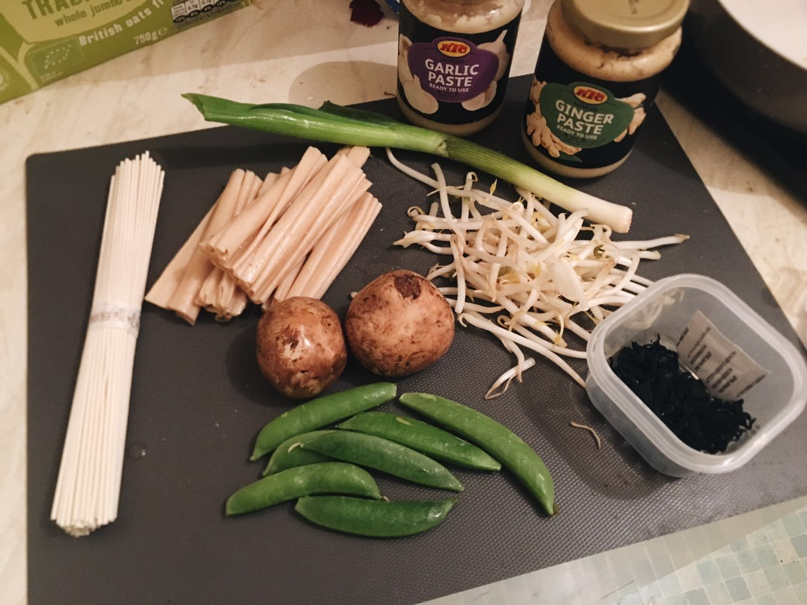
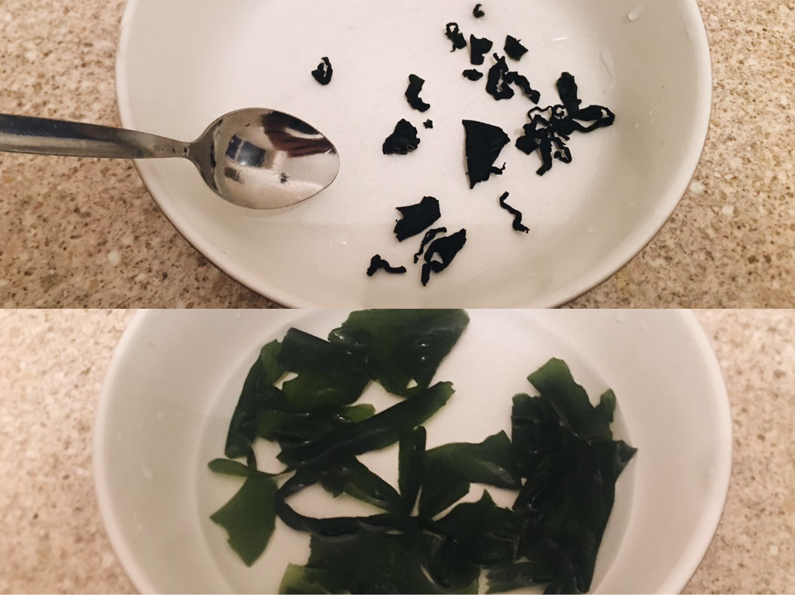
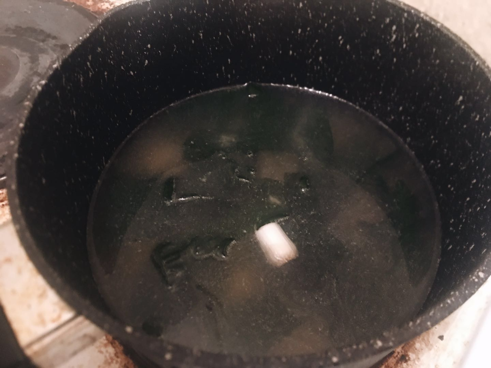
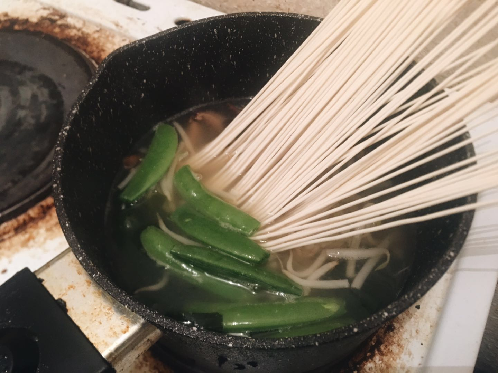
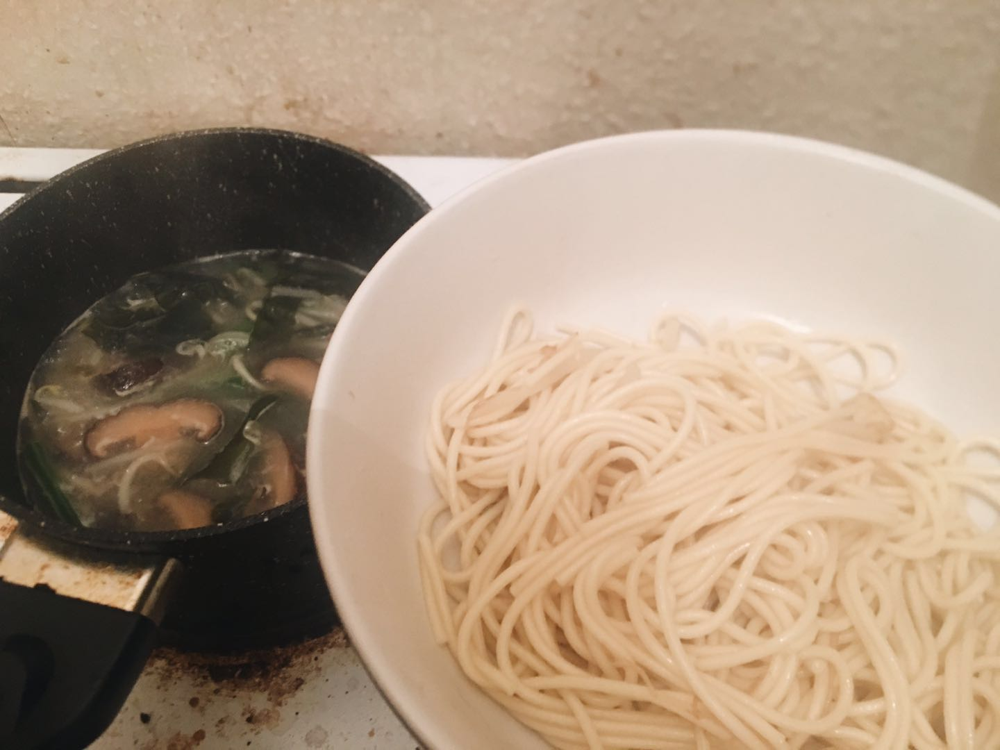
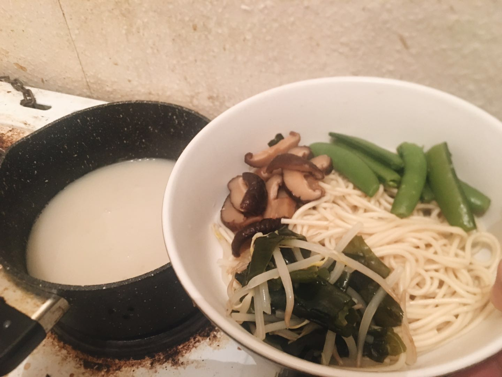
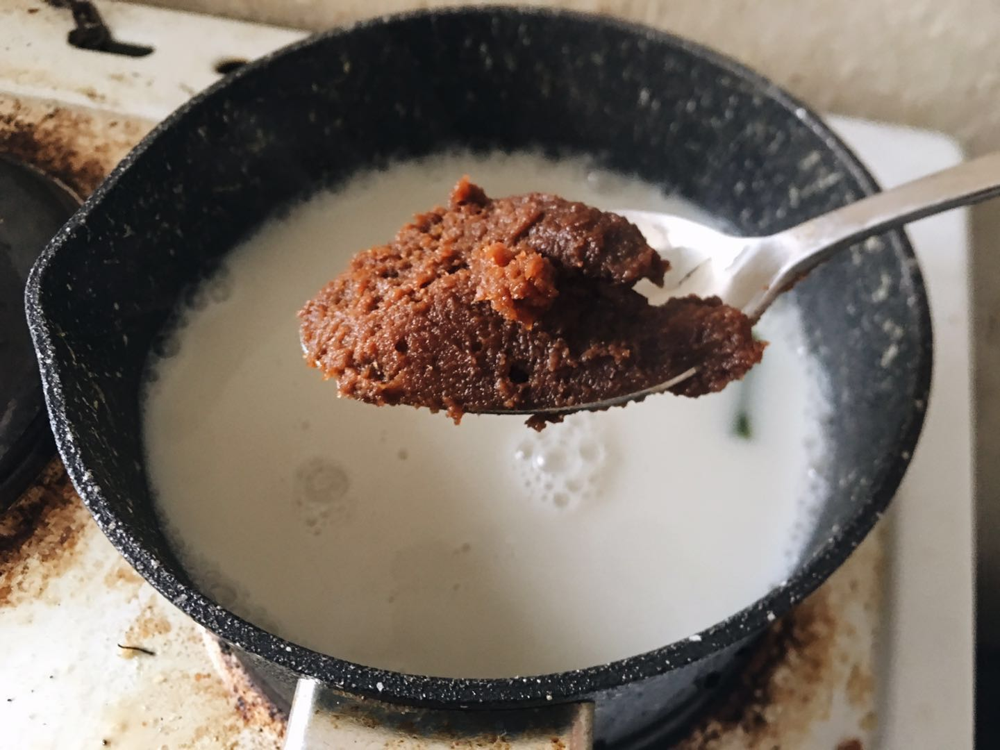
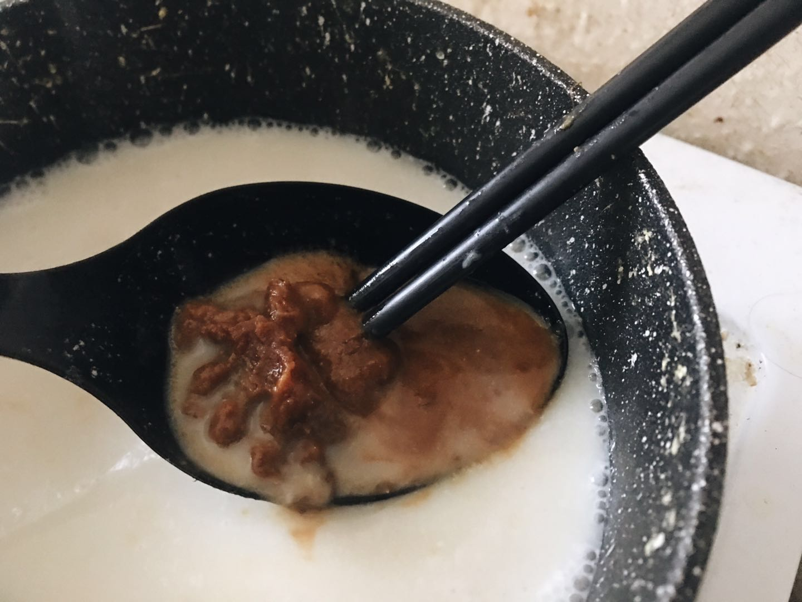

味噌真的是个好东西，阿金冰箱里常备的酱料之一。它好就好在随便做什么菜都可以拿来代替盐用，但是盐只有咸味，味噌作为发酵食品，还多了一层氨基酸带来的旨味（うま味），而且本身原材料的大豆也是高蛋白高营养的好东西。
味噌汤本身就是阿金很喜欢日本家庭料理，因为真的超！简！单！传统的味噌汤就是昆布泡一泡，和柴鱼片一起煮一煮，味噌丢进去化开就好了，什么调味料都不需要，海鲜和味噌带来的醇厚风味已经能让喝到的人超级满足了。
因为柴鱼片真的哪里都很贵，为了省钱阿金一般都不加；昆布又要煮很久，作为日常料理就会过于耗时，所以一般用海带芽代替；但讲真没觉得有很大区别哈哈哈哈。所以就寻思，不如一不做二不休做成纯素版的，又省钱又能让更多人享受味噌的美好，于是就做了纯素味噌汤。但是光味噌汤面有些无聊，所以加了很多喜欢的蔬菜。而日式拉面一般会配叉烧之类的，就想到似乎可以用豆制品比如腐竹，用照烧的方式做个配菜，也蛮好吃的

以下 1 人份料理
准备材料
首先准备好原材料，顺便算一下价钱～
- 中式挂面 60g - 0.32£
- 干海带芽 1茶匙 - 0.05£
- 黄豆芽 40g - 0.16£
- 葱 1根 - 0.05£
- 干腐竹 25g - 0.3£
- 栗子菇 2朵 - 0.2£
- 甜豆 30g - 0.2£
然后调料用了
- 植物油 半汤匙
- 生抽 半汤匙
- 糖 1茶匙
- 味噌 1汤匙
- 腰果奶 150g - 0.15£
- 姜泥 半茶匙
- 蒜泥 半茶匙
- 烤芝麻 随缘撒一撒

总共 1.43£。 海带芽、干腐竹和味噌可以随便找个中超买。豆芽和葱最好不要省略，别的蔬菜可以根据喜好添加。腰果奶也可以换成别的植物奶，但是多次试验发现腰果奶的效果是最好的，可以给汤带来很浓郁的口感。
前期准备
腐竹隔夜泡发沥干水，栗子菇切片，甜豆去两端，葱的根部切掉留着，剩下部分切葱花
海带芽加入 100g 水泡发，可以提前几分钟泡，也可以开始做的时候放到碗里泡发，因为 5 分钟左右就泡好了，要注意的是，海带芽一定不要加多，泡发后会变得很大的～～

准备配菜照烧腐竹
锅里放半汤匙植物油，大火烧热，把腐竹丢进去，煎到稍微发黄
调中火，加入 1 汤匙水，半汤匙生抽、1 茶匙糖，快速翻炒让腐竹吸收酱汁上色，注意加了酱油很容易焦一定要看好，把腐竹捞起来丢到一边，不用洗锅
煮煮煮
泡发的海带芽连同泡海带芽的水倒入锅中，把葱的根部也丢进去，再加入约 400g 左右的水，煮开

然后把半茶匙姜泥、半茶匙蒜泥、豆芽、菇、甜豆和面都丢进去，不盖锅盖煮六七分钟到面熟，盖锅盖更快但是要看着防止瀑锅

面熟了把面捞到碗里

做味噌浓汤
然后随缘把配菜能捞上来的都捞上来，捞不上来就算了，锅里倒入 150g 腰果奶，搅拌均匀

烧热后关火，锅离开灶台，舀一汤匙味噌，量大概这么多

先放在大汤勺里，然后把大汤勺浮在汤上，用筷子慢慢把味噌搅拌溶解混合到汤里。离火是因为高温会破坏味噌的风味；用汤勺溶解是因为味噌直接丢进去很难化开

把浓汤倒到碗里，撒葱花和烤芝麻，放上照烧腐竹，开吃～